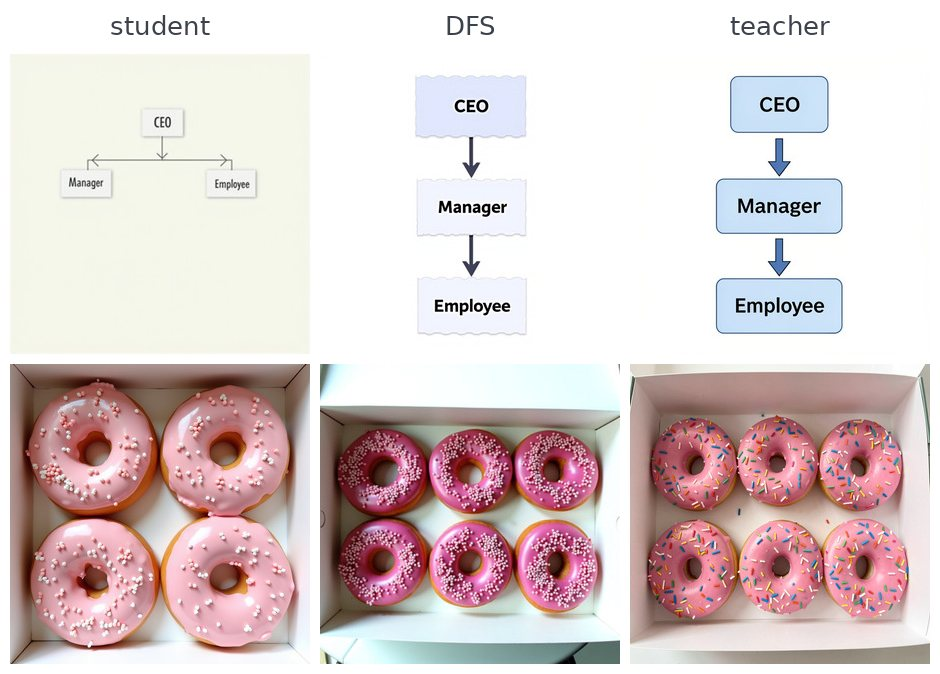
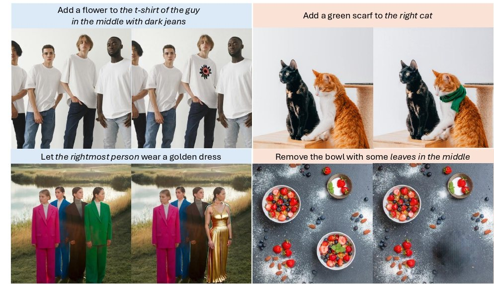
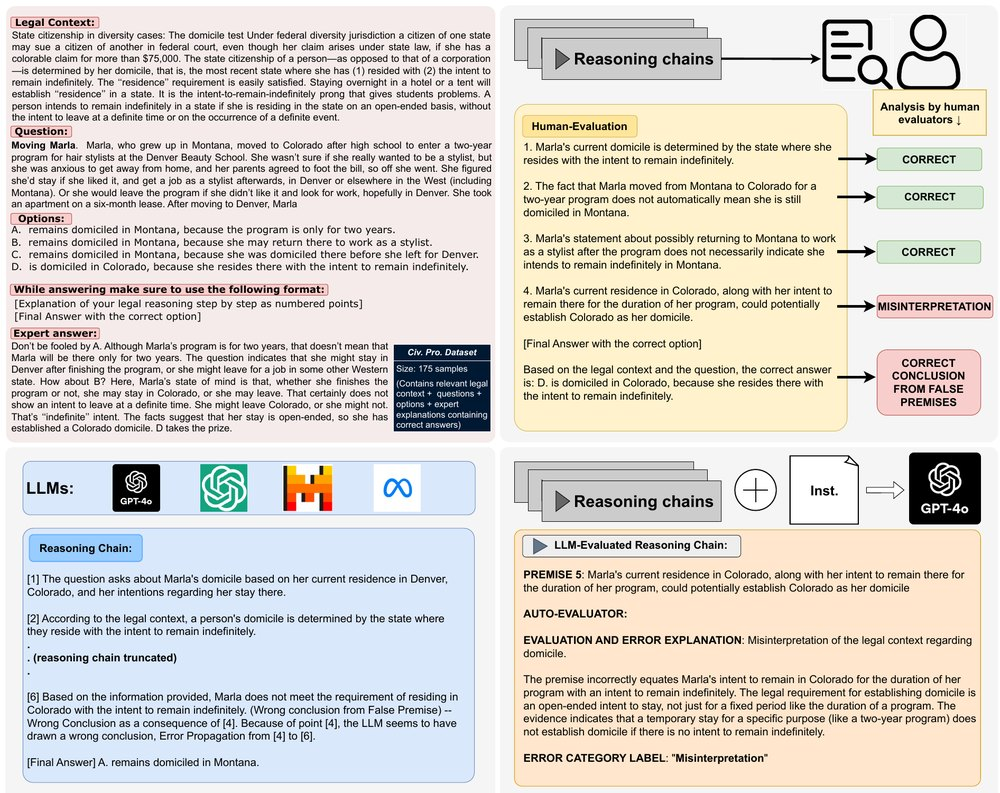
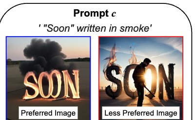
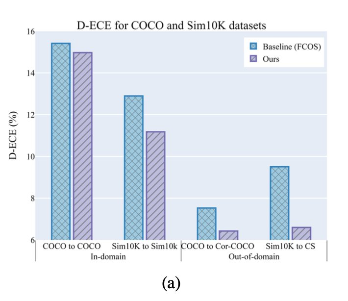
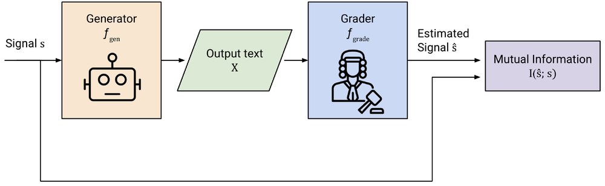
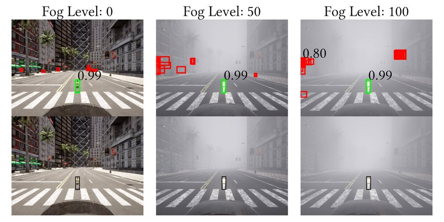
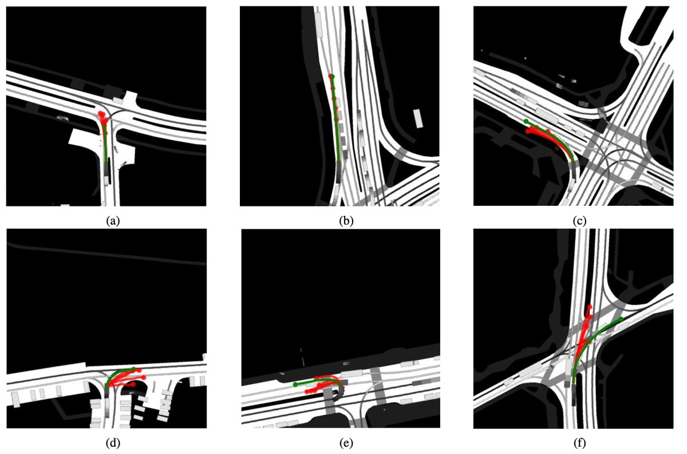

I am a fourth-year PhD student in Computer Science at Arizona State University, advised by Chitta Baral and Yezhou Yang. I work on generative models for images, video and speech, mostly on steering them at inference time without retraining.
I have spent two summers as an Applied Scientist Intern at Amazon, working on expressive speech generation and on object detection and tracking. Before ASU I was a research assistant at MBZUAI with Muhammad Haris Khan, and before that I studied Electronic and Telecommunication Engineering at the University of Moratuwa, Sri Lanka.
* denotes joint first authors

Moves a capability from a black-box teacher into an open flow-matching model using about twenty of the teacher’s images, with no training and no extra cost at inference.







I dance Latin ballroom, cook, work out, and read a lot of non-fiction.